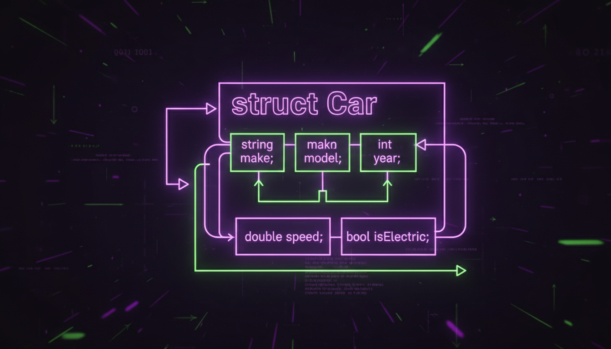

Оголошення структур, доступ до членів, вкладені структури, typedef

Структура (struct) — це користувацький тип даних, що групує пов'язані змінні різних типів під одним іменем.
#include <iostream>
#include <string>
struct Student {
std::string name;
int age;
double gpa;
};
int main() {
// Створення об'єкта
Student s1;
s1.name = "Ivan Petrov";
s1.age = 20;
s1.gpa = 4.5;
// Ініціалізація списком (C++11)
Student s2 = {"Maria Ivanova", 19, 4.8};
Student s3 = {.name = "Petro Sidorov", .age = 21, .gpa = 4.2}; // Designated (C++20)
std::cout << "Студент: " << s1.name << ", " << s1.age << " років, GPA: " << s1.gpa << std::endl;
// Масив структур
Student group[3] = {
{"Anna", 20, 4.0},
{"Boris", 21, 3.8},
{"Olga", 19, 4.9}
};
double avgGpa = 0;
for (const auto& s : group) {
avgGpa += s.gpa;
}
std::cout << "Середній GPA: " << (avgGpa / 3) << std::endl;
return 0;
}